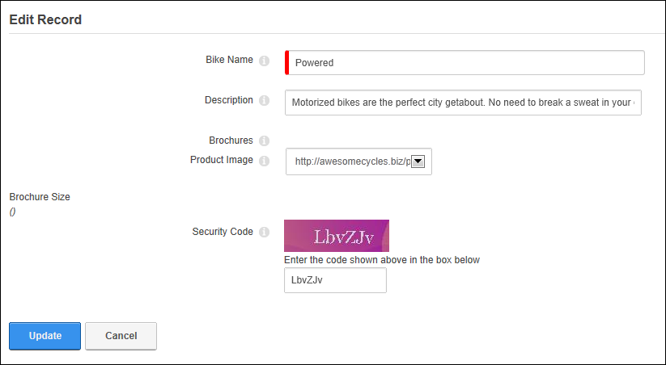

How to add a record to a list when a security code is required using the Forms and Lists module . Note: The ability to add records may be restricted.
Tip: If you cannot read the Security Code, strike the F5 key on your keyboard to view a new code. You should be this before entering your data, as all data will be lost if you strike F5.

Adding a record to a list when a security code is required